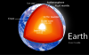

earth-inner-core

Definition: Earth's inner core is the innermost geologic layer of planet Earth. It is primarily a solid ball with a radius of about 1,220 km (760 mi), which is about 20% of Earth's radius or 70% of the Moon's radius.There are no samples of Earth's core accessible for direct measurement, as there are for Earth's mantle. Information about Earth's core mostly comes from analysis of seismic waves and Earth's magnetic field. The inner core is believed to be composed of an iron–nickel alloy with some other elements. The temperature at the inner core's surface is estimated to be approximately 5,700 K (5,430 °C; 9,800 °F), which is about the temperature at the surface of the Sun.
Source: Wikipedia
Wikipedia Page (Something wrong with this association? Let us know.)
Wikidata Page (Something wrong with this association? Let us know.)
Occurs in: